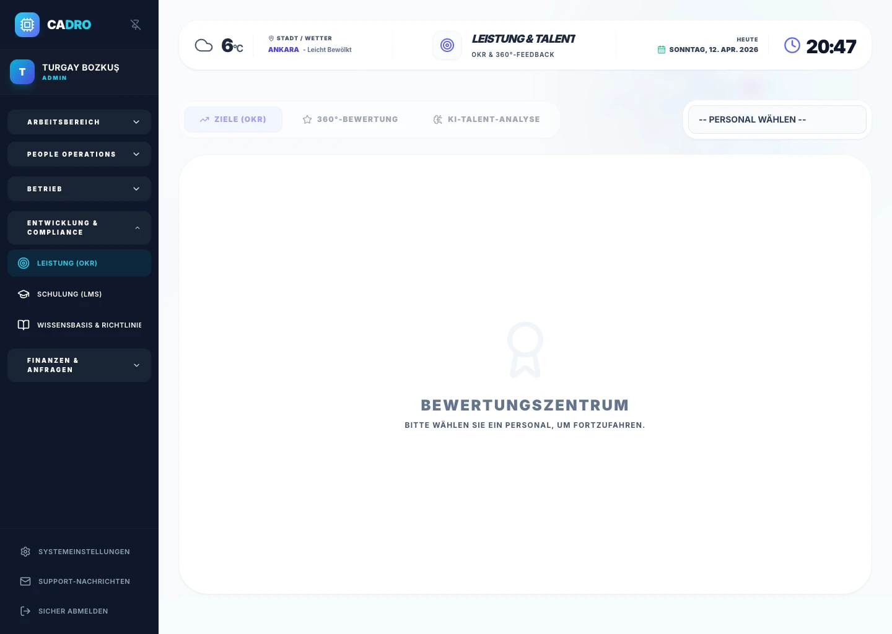

OKR-Zielmanagement
Ziele auf Unternehmens-, Team- und Individualebene mit Titel, Beschreibung und Fristdatum definieren. Fortschritt wird im Bereich 0–100% verfolgt; Status erscheint als TODO / IN_PROGRESS / COMPLETED.

PERFORMANCE & OKR
Das Performance-Management-System: Verwalten Sie 360-Grad-Feedback, OKR-Tracking und Leistungsbeurteilungen in einer einzigen zentralen Plattform. Mit CADRO sehen Teams ihre definierten Ziele deutlich klarer, Manager treffen fundiertere strategische Entscheidungen und das Mitarbeiterengagement steigt messbar nachhaltig.

Ziele bleiben unsichtbar, Feedback ist fragmentiert, und Beurteilungen stauen sich am Jahresende.
OKRs, 360°-Bewertung und Manager-Scoring in einem zentralen Performance-Workflow.
Klare Ziele, bessere Entwicklungstransparenz und Performance-Daten für bessere Entscheidungen.
PERFORMANCE-MODUL
Ziele auf Unternehmens-, Team- und Individualebene mit Titel, Beschreibung und Fristdatum definieren. Fortschritt wird im Bereich 0–100% verfolgt; Status erscheint als TODO / IN_PROGRESS / COMPLETED.
Punkte werden aus 4 verschiedenen Quellen gesammelt: Führungskraft, Kolleg:in, Selbstbewertung und direkte Reports (1–5 Sterne). Kommentare und Gesamtentscheid sammeln sich auf derselben Karte.
Die gesammelten Bewertungsdaten werden an Gemini AI gesendet. Das System fasst Stärken, Entwicklungsfelder und Karrierepotenzial automatisch zusammen.
Jeder Beurteilungszeitraum (z. B. �?2025 Jahresende") wird separat abgeschlossen und archiviert. Der historische Vergleich macht die Entwicklungskurve sichtbar.
Führungskräfte können Performance-Profile verschiedener Mitarbeitenden nebeneinander analysieren. Beförderungs- und Entwicklungsentscheidungen werden datengestützt getroffen.
Score- und Kommentardaten fließen in die Karrierefairness-Analyse ein. Hochpotenzielle Profile und gefährdete Talente werden frühzeitig erkannt.
FAQ
CADRO stellt transparente Bewertungsformulare für Führungskräfte, Kolleg:innen und direkte Reports bereit. Sie können unternehmensspezifische Kompetenzen definieren und automatische Zuweisungsflüsse einrichten.
KPIs messen Ergebnisse, OKRs definieren ambitionierte Ziele und die Schritte, die Teams dorthin führen. CADRO ermöglicht die Verwaltung beider Konzepte in einem System.
BEREIT?